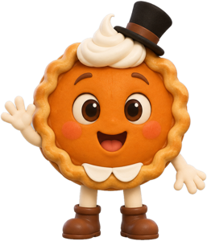

← festivals
I'm Thankful For…
感恩例句聆聽

✏️ 寫我的感恩節卡片
⭐ 我標記的句子（抄到卡片上）
📝 卡片要寫的 5 句（加上 To 和 From）
I'm
你的名字
.
一句感恩節小知識（下面 6 選 1）
I'm thankful for
對象
because
原因
.
I'm thankful for
對象
because
原因
.
一句結尾句（下面 6 選 1）
💡 感恩節小知識（第 2 句，選 1 句）
🎉 結尾句（第 5 句，選 1 句）
老師下載 Teacher downloads：
學生卡 A4
示範卡 A3
詞語庫 A4
重新開始